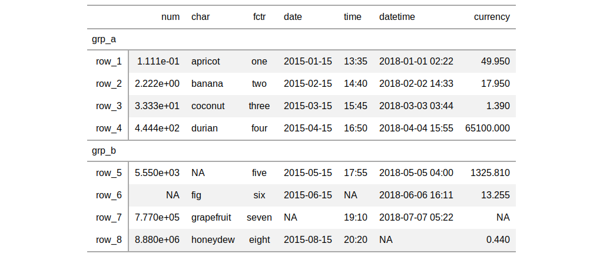
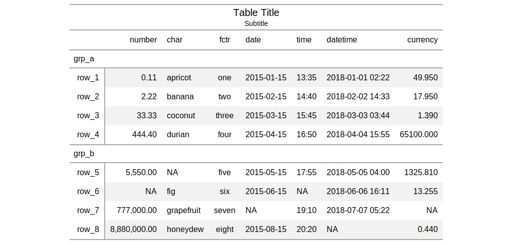

| gt {gt} | R Documentation |
The gt() function creates a gt table object when provided with
table data. Using this function is the first step in a typical gt
workflow. Once we have the gt table object, we can perform styling
transformations before rendering to a display table of various formats (e.g.,
HTML, LaTeX, RTF).
gt(data, rowname_col = "rowname", groupname_col = "groupname",
rownames_to_stub = FALSE,
stub_group.sep = getOption("gt.stub_group.sep", " - "))
data |
a |
rowname_col |
the column name in the input |
groupname_col |
the column name in the input |
rownames_to_stub |
an option to take rownames from the input |
stub_group.sep |
the separator to use between consecutive group names (a
possibility when providing |
There are a few data ingest options we can consider at this stage. We can
choose to create a table stub with rowname captions using the
rowname_col argument. Further to this, stub row groups can be created
with the groupname_col. Both arguments take the name of a column in
the input table data. Typically, the data in the groupname_col will
consist of categories of data in a table and the data in the
rowname_col are unique labels (perhaps unique across the entire table
or unique within groups).
Row groups can also be created by passing a grouped_df to gt()
by using the dplyr::group_by() function on the table data. In this
way, two or more columns of categorical data can be used to make row groups.
The stub_group.sep argument allows for control in how the row group
label will appear in the display table.
an object of class gt_tbl.


Other table-part creation/modification functions: gt_preview,
tab_footnote, tab_header,
tab_options, tab_row_group,
tab_source_note, tab_spanner,
tab_stubhead_label, tab_style
# Create a table object using the
# `exibble` dataset; use the `row`
# and `group` columns to add a stub
# and row groups
tab_1 <-
exibble %>%
gt(
rowname_col = "row",
groupname_col = "group"
)
# The resulting object can be used
# in transformations (with `tab_*()`,
# `fmt_*()`, `cols_*()` functions)
tab_2 <-
tab_1 %>%
tab_header(
title = "Table Title",
subtitle = "Subtitle"
) %>%
fmt_number(
columns = vars(num),
decimals = 2
) %>%
cols_label(num = "number")